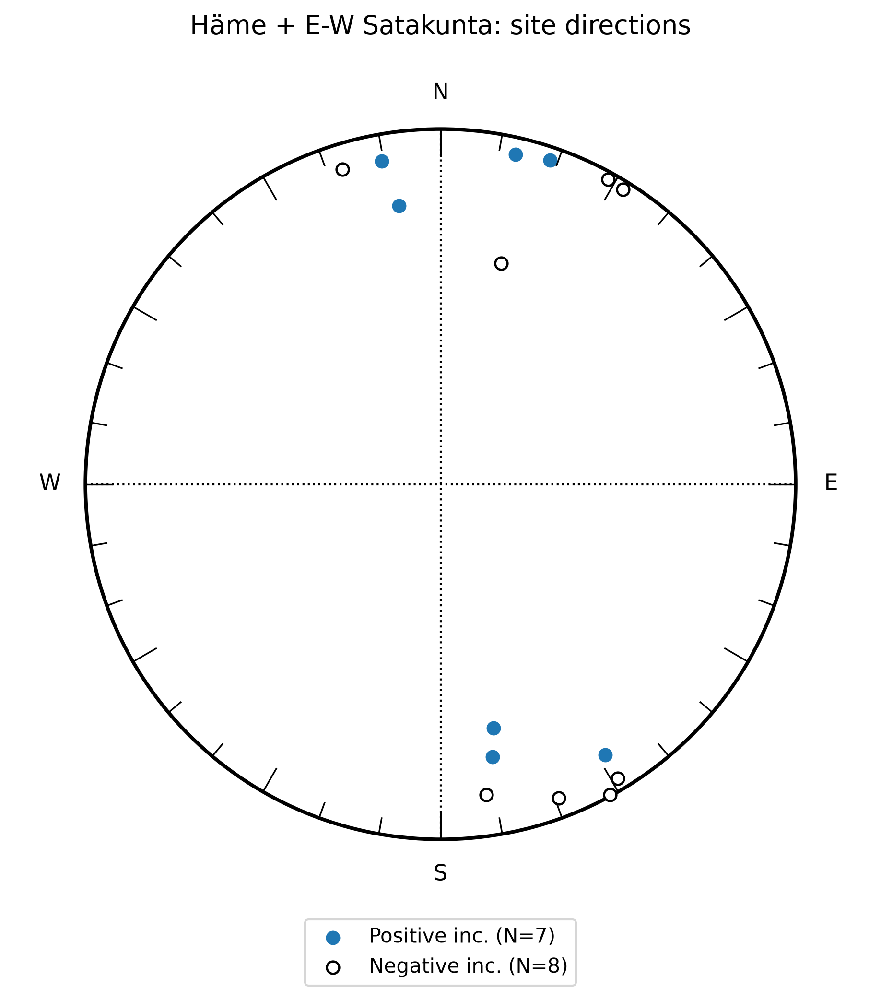
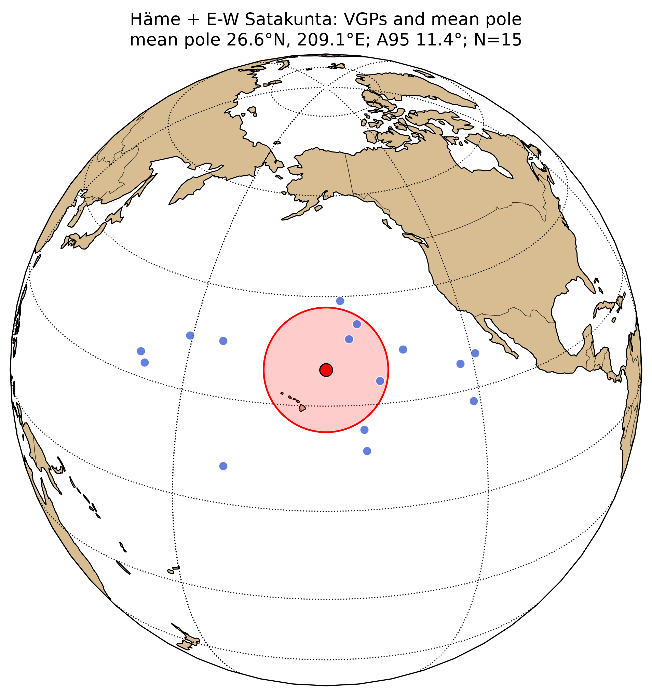
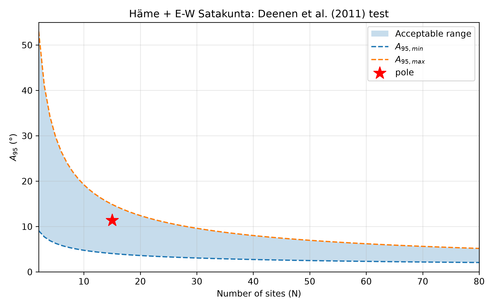

Baltica Precambrian pole assessment prototype
| site | dir_dec | dir_inc | dir_k | dir_alpha95 | dir_n_samples | vgp_lat | vgp_lon | comment |
|---|---|---|---|---|---|---|---|---|
| AO | 12.8 | 5.3 | 7.1 | 7 | 30.2596 | 186.934 | need check | |
| NO | 349.7 | 8.4 | 35.5 | 4 | 32.1433 | 213.977 | need check | |
| OJ | 351.5 | 21.8 | 4.9 | 16 | 39.1911 | 212.398 | need check | |
| FA | 159.4 | -6.2 | 33.7 | 3 | 29.4165 | 225.326 | need check | |
| H1 | 15.4 | -35.7 | 69.4 | 14.9 | 3 | 7.4 | 189.9 | need check |
| H12 | 31.8 | -2.7 | 2 | 22.8 | 170.5 | need check | ||
| H15 | 342.7 | -7.9 | 22.7 | 14.4 | 6 | 24.2 | 219.9 | need check |
| H18 | 28.8 | -2.4 | 2 | 24.5 | 169 | need check | ||
| H25 | 18.7 | 4.1 | 34.7 | 10.4 | 7 | 29.9 | 179.3 | need check |
| H13 | 148.9 | -3.7 | 8.5 | 27.9 | 5 | 26.2 | 240.8 | need check |
| H17 | 151.4 | -0.4 | 2 | 25 | 237.1 | need check | ||
| H20 | 148.7 | 11.7 | 7.6 | 29.6 | 5 | 17.8 | 238.5 | need check |
| H23 | 169.2 | 22.9 | 22.5 | 19.8 | 4 | 15.5 | 216.3 | need check |
| H24 | 167.8 | 30.4 | 34.4 | 13.2 | 5 | 11.5 | 216.7 | need check |
| VR+HR | 171.6 | -12.6 | 6.8 | 38.2 | 4 | 34.8 | 215.9 | need check |
Source workbook: data/site_level_data_site_comments_added.xlsx;
sheet: Häme + E-W Satakunta.
This table is regenerated automatically from the workbook.
Tilt-corrected site directions for Häme + E-W Satakunta. Filled and open symbols distinguish positive and negative inclinations. This plot shows the scatter of individual site directions behind the mean pole.

Site-level VGPs are plotted on an orthographic globe together with the Fisher mean pole and its circular A95 confidence region. This is the Laurentia-style view needed to inspect the spatial scatter of the site poles.

The Deenen et al. (2011) diagnostic compares the pole A95 with the expected range for the number of site-level VGPs. This provides a first-order PSV-style check.

Matched site-level sheet: Häme + E-W Satakunta
| site | dir_dec | dir_inc | dir_k | dir_alpha95 | dir_n_samples | vgp_lat | vgp_lon | Comment |
|---|---|---|---|---|---|---|---|---|
| AO | 12.8 | 5.3 | 7.1 | 7 | 30.259570 | 186.934099 | need check | |
| NO | 349.7 | 8.4 | 35.5 | 4 | 32.143292 | 213.977348 | need check | |
| OJ | 351.5 | 21.8 | 4.9 | 16 | 39.191125 | 212.398250 | need check | |
| FA | 159.4 | -6.2 | 33.7 | 3 | 29.416503 | 225.326097 | need check | |
| H1 | 15.4 | -35.7 | 69.4 | 14.9 | 3 | 7.400000 | 189.900000 | need check |
| H12 | 31.8 | -2.7 | 2 | 22.800000 | 170.500000 | need check | ||
| H15 | 342.7 | -7.9 | 22.7 | 14.4 | 6 | 24.200000 | 219.900000 | need check |
| H18 | 28.8 | -2.4 | 2 | 24.500000 | 169.000000 | need check | ||
| H25 | 18.7 | 4.1 | 34.7 | 10.4 | 7 | 29.900000 | 179.300000 | need check |
| H13 | 148.9 | -3.7 | 8.5 | 27.9 | 5 | 26.200000 | 240.800000 | need check |
| H17 | 151.4 | -0.4 | 2 | 25.000000 | 237.100000 | need check | ||
| H20 | 148.7 | 11.7 | 7.6 | 29.6 | 5 | 17.800000 | 238.500000 | need check |
| H23 | 169.2 | 22.9 | 22.5 | 19.8 | 4 | 15.500000 | 216.300000 | need check |
| H24 | 167.8 | 30.4 | 34.4 | 13.2 | 5 | 11.500000 | 216.700000 | need check |
| VR+HR | 171.6 | -12.6 | 6.8 | 38.2 | 4 | 34.800000 | 215.900000 | need check |